Ströber maakt solide, kwalitatieve comfortschoenen voor dagelijks gebruik — met een goede pasvorm en degelijke afwerking.
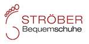
Ströber is een Duits schoenenmerk dat bekendstaat om de solide kwaliteit en de comfortabele pasvorm van zijn schoenen. De collectie is breed en praktisch: van klassieke straatschoenen tot wandelmodellen, allemaal gemaakt met aandacht voor de behoeften van mensen die comfortabel willen lopen.
De schoenen worden vervaardigd van kwalitatief leer met een degelijke loopzool en een anatomisch binnenzool. Ströber biedt een goede prijs-kwaliteitsverhouding en is een betrouwbare keuze voor dagelijks gebruik, ook voor mensen met gevoelige voeten of voetklachten.
De nieuwe herfst- en wintercollectie 2026 — een selectie uit ons huidige assortiment. Kom langs voor het volledige aanbod en persoonlijk advies.
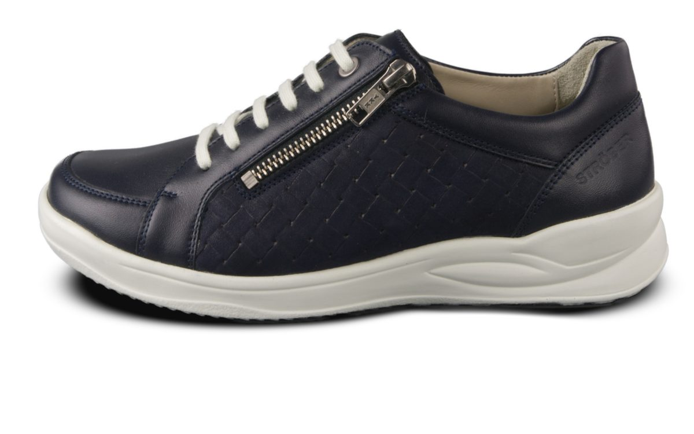
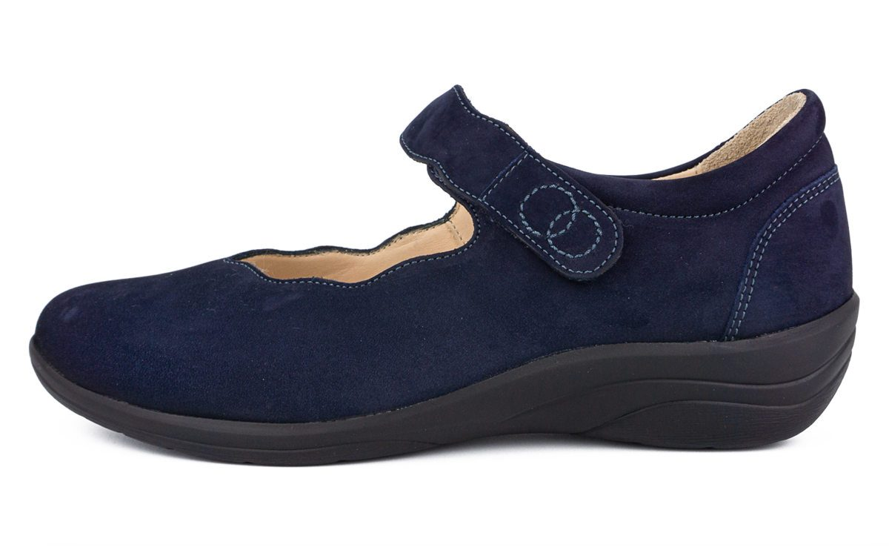
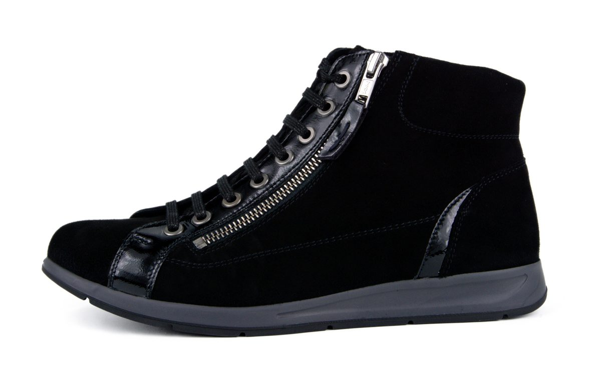
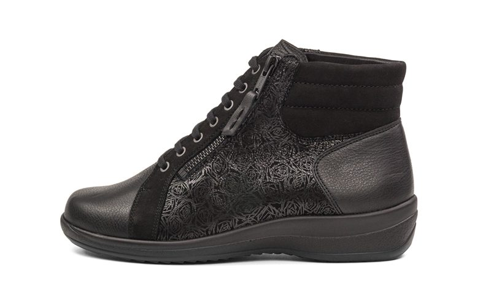
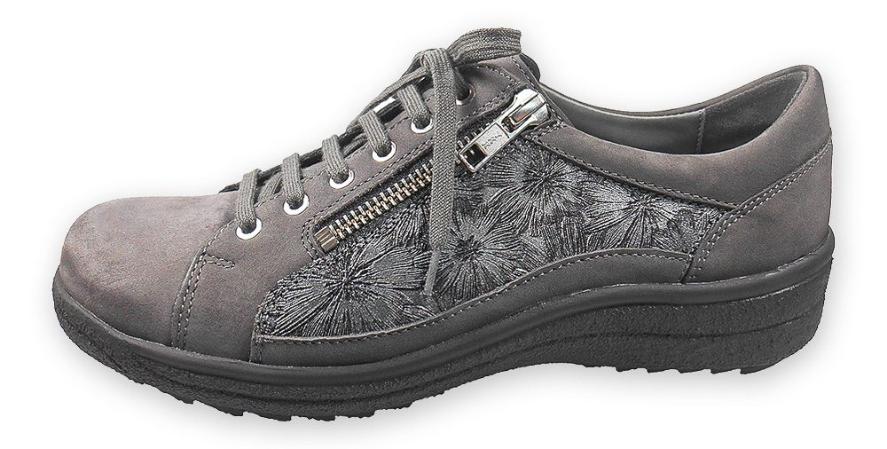
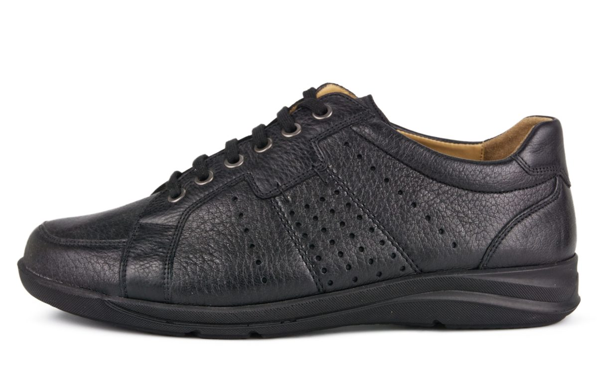
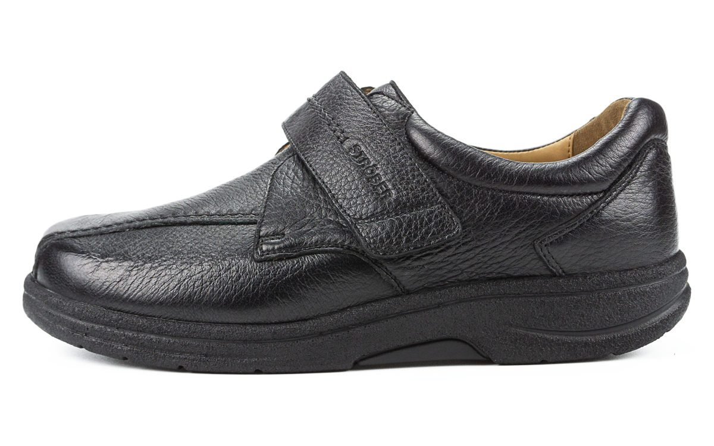
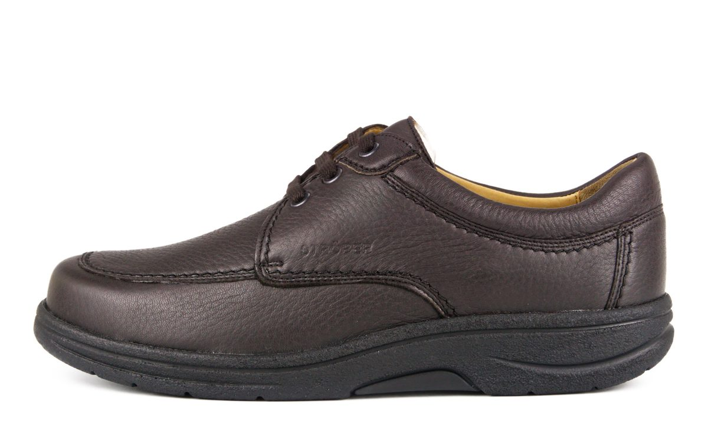
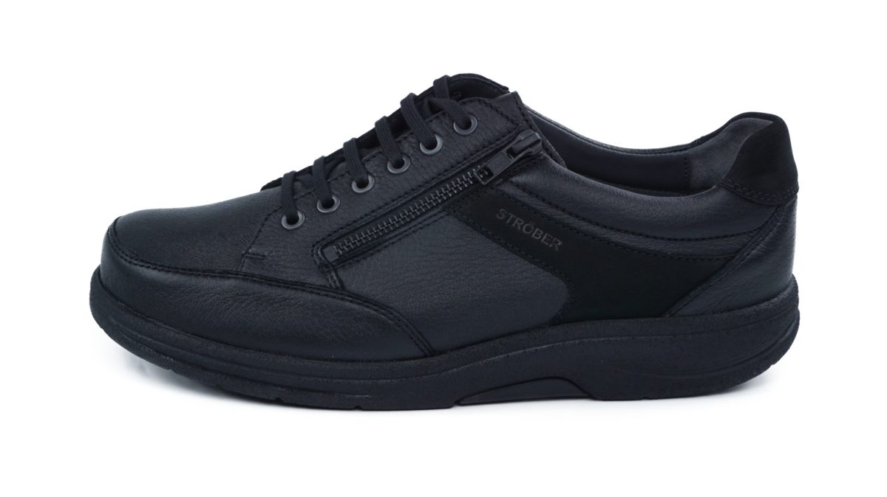
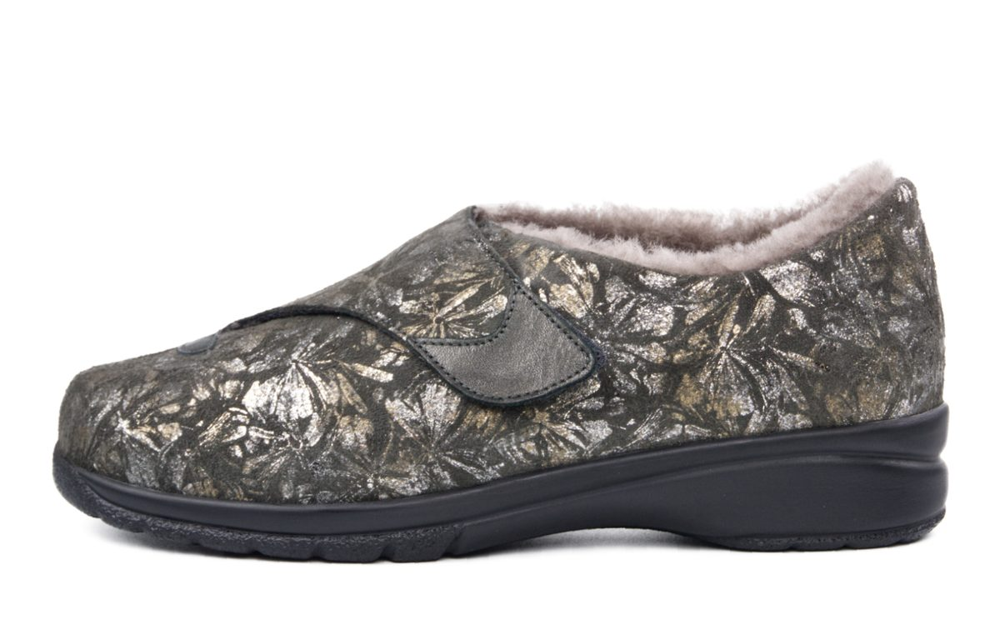
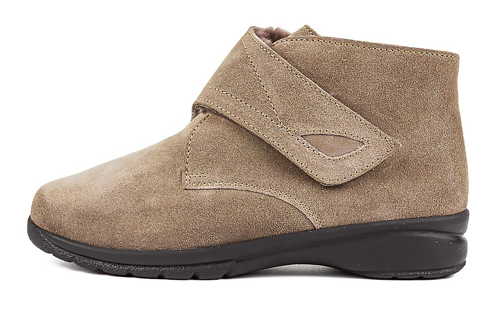
Wij voeren Ströber schoenen in een breed assortiment van maten en breedtes. Kom langs voor persoonlijk advies en probeer de schoenen.
Tarwelaan 60
Eindhoven
Ma 11–18 · Di–Vr 9:30–18
Za 9:30–17
Kom langs in onze winkel voor persoonlijk advies en pas de Ströber collectie. Onze specialisten helpen u de perfecte schoen te vinden.